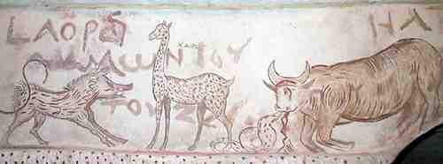

Did you know The current population of llamas and alpacas in South America is estimated to be about 7 million, and there are about 20,000-25,000 llamas and 800-1,000 alpacas in the U.S. and Canada today.
Press Spacebar to know more about the FURRY ONE
Y2K was old hat for these animals. Think Y5K. Llamas are probably the oldest domesticated animal on earth that might have been used as pack animals. (Dogs, sheep, goats and pigs all precede the llama as domesticated animals.) The Andean civilizations in South America have used them for four or five thousand years as beasts of burden.
That is the accepted theory, but have a look at this picture which is a painting in the museum in Athens, Greece. Uri Yehuda, who used to have a very interesting web site, with all sorts of mysterious things on it, sent me the picture after he had seen a program about strange fossils found in Greece. The fossils look like llamas with long necks and camel jaws.
He says "It has been suggested that the Greek Gods created these animals about 20,000 years ago. Is it possible?"
Professor Lydia Chiappini who owned Heavens Gate Llama Farm was kind enough to send the following message on this:
"Well Brian, yeah, they do look like llamas and I like the idea of the Greek gods creating llamas but actually those are horses from the Archaic (Geometric) Period of early Greek art."
Uri also sent the above picture and says "there seems to be an another ancient llama painting in recent restorations in Marsha (Beit Guvrin site, north of Beer-Sheva, Israel). The paintings are in a burial cave of noblemen from Sidon (in Lebanon) and date from 300 BC."
This Slide Moves Top To Bottom
This Slide Rotates Clockwise Around z-axis
This Slide Scales 3 Times
Away
Towards
Futher Towards
Visualization Slide Positions